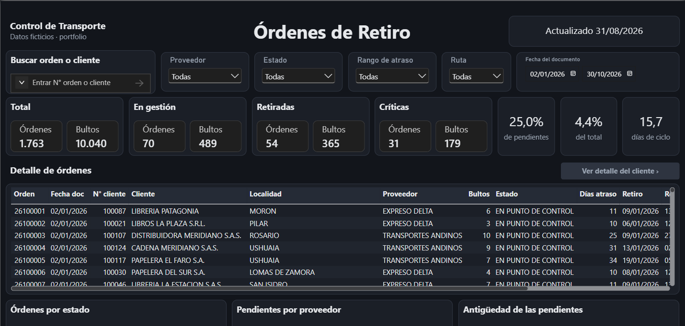
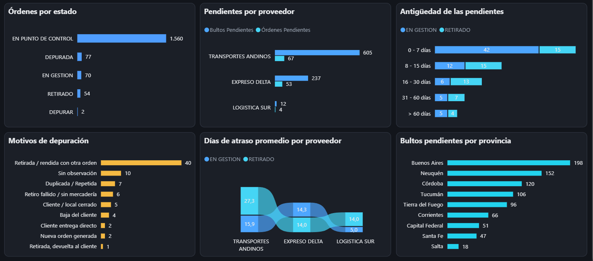
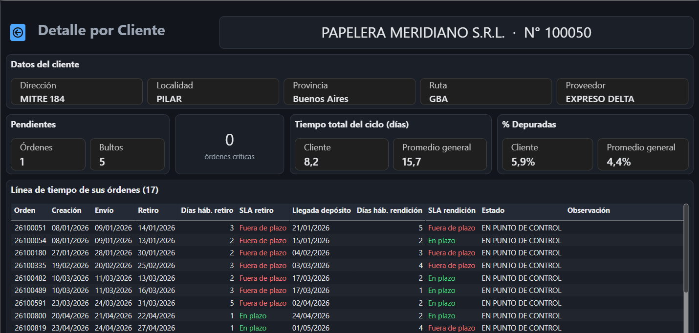
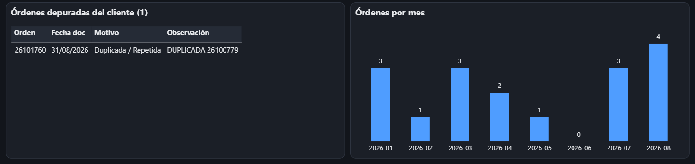

Project · Logistics
Pick-up orders control
When a company asks a carrier to collect goods from its customers (returns, damaged goods or overstock), orders get stuck in two places: waiting to be picked up, or picked up but never delivered back to the depot. This project takes the master Excel file the team works with and turns it into a daily list of critical orders, an email for each carrier and a dashboard for the logistics and sales teams.
It replicates a dashboard I built at work, rebuilt from scratch. The rules, thresholds and volumes come from the real operation; customers, carriers, addresses and orders are invented. The dashboard is in Spanish, like the team that uses it.


What it shows
- Turning an operational process into testable rules: business days, deadlines per carrier, critical status, delay ranges, routes and purge reasons.
- A star schema in SQL (DuckDB), with one query per dashboard KPI, in standard SQL that also runs on PostgreSQL.
- A dashboard built for two audiences: logistics, who chase orders, and sales, who talk to customers.
- Alerts that never repeat: the Excel file records which orders were already notified.
- Power BI as code (.pbip): every measure and every visual can be reviewed in Git.
How it works
- Generates the master Excel file with the operation's 21 columns and about 230 orders a month across three carriers.
- Applies the rules in Python: sent date, business days in each status, delay, critical status, route and purge reason.
- Sends the daily alert: one email per carrier with its newly critical orders, which are then flagged so they are never sent twice.
- Loads a star schema in DuckDB and computes the KPIs in SQL.
- Feeds Power BI: main page, search box and customer drill-through.
- Tests every rule: 60 tests, most of them on hand-made orders with the expected result worked out in a comment.
Order lifecycle and SLA
An order is created, sent to the carrier one business day later and becomes in progress. When the carrier collects it, it becomes picked up, and when it is delivered to the depot, at checkpoint. It can also end up purged.
An order is critical when the business days it has spent in a pending status reach its carrier's deadline:
| Carrier (fictional) | Days to pick up | Days to deliver | Orders a month |
|---|---|---|---|
| Expreso Delta | 2 | 3 | ~160 |
| Logística Sur | 5 | 7 | ~10 |
| Transportes Andinos | 10 | 15 | ~60 |
Business days skip weekends. Delay days are calendar days from order creation until it reaches the depot.
The dashboard
A main page to follow the operation, and a customer page to answer fast when sales asks “what happened with this customer's pick-up?”.






Sample output
Snapshot date 31/08/2026, eight months of fictional data.
| Total orders | 1,763 |
| Pending | 124 |
| Critical | 31 |
| Critical, as a share of pending | 25.0% |
| Purged | 4.4% |
| Total cycle time | 15.7 days |
Design decisions
- Rules live in Python, not in DAX. They are computed once and tested, so the dashboard and the emails never disagree.
- The alert only sends what's new. The “Mail” column works as a log: each order is emailed on the first day it becomes critical, and never again.
- Fixed snapshot date. Every run gives the same result, which makes it testable.
- Average delay by carrier ignores the filters: it is the benchmark everything else is compared against.
Stack
| Data and rules | Python 3 · pandas · NumPy (business days) · openpyxl |
|---|---|
| Model and KPIs | DuckDB · standard SQL (star schema) |
| Dashboard | Power BI Desktop · .pbip project (TMDL model, PBIR report) · DAX |
| Quality | pytest (60 tests) · report validated against Microsoft's schemas |